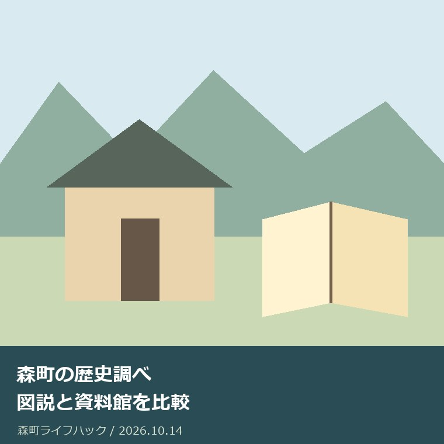
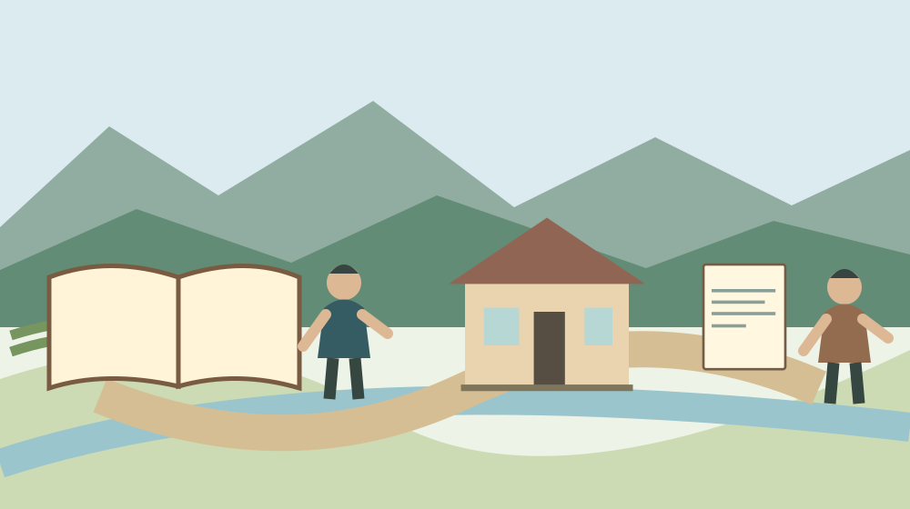

社寺・文化・建築
森町の歴史調べ｜図説と資料館を比較

Q. 実家の地区や社寺の歴史は、ウェブと資料館のどちらで調べる？
A. 森町の歴史は、公式の図説森町史で題材と出典を絞り、現物や生活の道具は森町立歴史民俗資料館で確かめる使い分けができます。図説は1999年2月発行時の情報を用いるため、現在の施設案内とは分けて読んでください。今日、調べる社寺や建物を一つ選び、該当項目と確認日を記録するところから始められます。
地域史を残した仕事を調べ方につなぐ
森町の歴史を調べる入口には、町公式の「図説森町史」と「森町立歴史民俗資料館」があります。文章や写真をまとめた人、資料を保管してきた人、展示を続ける人の仕事があって、現在の読者が触れられます。実家の地区や身近な社寺を調べるときも、まず残された資料を丁寧に使うところから始めたいと思います。
歴史を調べる目的は、町のことをすべて覚えることではありません。ご実家の近くの社寺、通っていた道、昔の建物など、家族が話せる対象を一つ選べます。問いが広すぎると、どの資料を読めばよいか分からなくなります。今日の一歩を「一つの対象と一つの問いを決める」と置けば、資料の使い分けが見えてきます。
大石浩之（磐田市／不動産業）です。この記事は、私が資料館で調査した体験の再現ではありません。2026年10月14日に森町公式の二つの案内を確認し、家族が根拠を残しながら調べる方法を考えます。地域史を不動産の値段の材料へ直結させず、土地や家に関わる記録の厚みとして捉える立場です。
事実整理｜図説は1999年の情報を用いる
森町公式の「図説森町史」は、写真や図を交えて歴史や過去の出来事を紹介する資料です。案内ページの更新日は2020年12月1日ですが、掲載情報は1999年2月発行時のものと明記されています。ページ更新日が新しく見えても、内容の基準時点が同じとは限りません。歴史資料と現在の案内を分ける根拠です。
図説森町史の目次は全50項目あり、自然や時代ごとの歴史から、暮らしや建築、工芸品へと題材が広がっています。すべてを最初から順に読む必要はありません。自分の問いに近い項目を探す入口として使えます。目次を見れば、漠然とした「森町の歴史」を、具体的に調べられる問いへ縮められます。
目次には舞楽の歴史、小國・天宮両社の舞楽、森町の民家、神社建築、寺院建築、工芸品・書跡・古文書などがあります。社寺という一語でも、祭りの伝承を知りたいのか、建物の形式を知りたいのかで読む項目が違います。対象名と知りたい内容を二つに分けて書くと、関連する項目を選びやすくなります。
1999年の情報だから読まないという判断も、2026年にウェブで読めるから最新だという判断も、資料の役割を取り違えます。昔の建物や生活の説明は歴史を知る手掛かりです。一方、現在の拝観、公開、所在地の扱い、連絡先は最新の公式案内へ戻ります。同じ記事の中でも、何の時点の説明かを意識して読む必要があります。
図説の記事を家族へ共有するなら、見出し名、公式URL、発行時点、確認日を一緒に残します。スクリーンショットだけでは、古い情報という注意書きが消えることがあります。画面の一部を送るより、該当項目と目次へのリンクを組にする方法が使えます。受け取った家族が元の資料に戻れることを優先します。
個人の資料を扱う前の確認は、森町の古文書相談でも扱いました。今回の対象と混同せず、関心の近い部分を読み合わせられます。
資料館を見る｜展示と建物が二つの手掛かり
森町立歴史民俗資料館は、1885年建築の旧郡役所を移築した建物だと、森町公式の案内は説明しています。展示を見る場所自体にも歴史がある点が意外です。展示品と建物を二つの調査対象として考えられます。ただし現在の位置に1885年から同じ姿で建っていると、移築の説明を落として理解しないでください。
資料館の展示として、農耕具、生活用品、古文書などが公式に紹介されています。生活の道具を見れば、文章では想像しにくい形や使い方について問いを持てます。ただし特定の品が訪問日に見られるか、どの資料を閲覧できるかは、紹介文だけでは確定できません。調べたい対象が決まっている場合は、訪問前に相談します。
森町立歴史民俗資料館の所在地は森町森2144、公式掲載電話は0538-85-0108です。案内ページの更新日は2021年8月23日です。掲載上の開館時間は9時30分〜16時30分、休館日は月曜日・火曜日・年末年始、入館料は無料です。2026年10月14日に本文を確認しましたが、臨時の変更は訪問前に再確認します。
無料の施設でも、家族が移動に使う時間や交通費は残ります。私は、見たい対象を一つ選び、開館の確認を済ませてから移動を手配する方法を勧めます。資料館の展示と、自分の持つ古文書の相談を同じ用事と決めつけないことです。閲覧や相談の可否は、何を知りたいかを具体的に伝えて確認してください。
旧郡役所の建物を調べたい場合は、建築年、移築、現施設の所在地を別々にメモできます。年号が一つ分かっても、その年に現在の場所へ建てられたとは限りません。家族の古い写真を照合するときも、撮影時点と建物の履歴を分けます。建物の年代を一つの数字へ縮めないことが、誤解を減らす方法です。
図説と資料館の比較｜答えたい問いで選ぶ
図説森町史と歴史民俗資料館は、どちらが優れているかを決める二択ではありません。図説は家で項目を探して文章と図を読める入口です。資料館は展示された物と建物を見て、形や大きさに関心を広げる入口です。最初に問いを一つ書けば、必要なのが文章の整理か、現物を見る機会かを判断しやすくなります。
社寺の建築を知りたい場合、図説の神社建築や寺院建築から始める方法があります。建物の形式や歴史的な説明を読み、さらに知りたい点を残します。現地を訪ねるなら、現在の公開条件は別に確認します。図説に紹介されていることは、敷地へ自由に入ってよいという意味ではありません。所有者や担い手への配慮が要ります。
生活の道具を知りたい場合は、資料館の農耕具や生活用品の紹介が手掛かりになります。名前だけでは分からなかった形や、家族の記憶にある道具との違いを見られる可能性があります。ただし見学者が使ったり触れたりできるとは確認していません。館内の指示に従い、表示を読んで、分からない内容を質問として残します。
実家にある古文書や書跡については、図説の関連項目で地域にどのような資料があるかを知れます。しかし自分の家の資料の年代、内容、価値が分かるわけではありません。現物を無断で持ち込まず、名称や状態、相談したい内容を先に伝えます。個別の専門判断を、一般的な地域史の文章で代用しない姿勢が要ります。
訪問する時間が取れなければ、図説の一項目を読み、問いを一つ残すだけでも調べ物は進みます。逆に、文章を読むより物の姿から関心が生まれる家族には、開館を確認した資料館の見学が向く場合があります。私は、詳しい人の調べ方へ無理に合わせず、家族ができる方法を入口にする方が続くと考えます。
関連する材料として、寺院建物の年代を残す台帳の記事があります。調べる対象と、資料が答えられる範囲を分けると、家族の記録にも根拠を残せます。
良い点｜入口が無料で分かれている
森町の歴史調べの良い点は、ウェブの図説と公開施設の案内が、町公式の情報として分かれていることです。家で読み始める人と、展示から知りたい人の両方が入口を持てます。私は、専門書を選ぶ前に関心の対象を絞れる仕組みとして評価します。何を調べたいかがまだ曖昧な家族にも、始めやすい形です。
図説が1999年2月発行時の情報であると明記する点も、読者にとって役立ちます。古い資料を古い資料として扱えるからです。私は、情報の古さを隠さない説明を評価します。最新の状況とは違う可能性が分かれば、社寺の歴史を読むことと現在の訪問予定を決めることを、別々に進められます。
資料館は展示内容に加えて、建物が旧郡役所の移築であることを紹介しています。展示物の背景と展示する場所の背景を一緒に考えられます。私は、町の暮らしと建築への関心がつながる点に可能性を感じます。単に見る品物が増えるのではなく、家族の一つの疑問から別の問いへ進める余地があります。
掲載上の開館時間、休館日、電話番号がそろっていることは、移動前の準備に使えます。無料という条件も、施設利用の費用を考える入口です。私は、案内を読むだけで完了にせず、臨時の変更を確認する習慣と組み合わせたいと思います。公開を支える人へ、同じ基本情報を何度も聞く負担を減らせるからです。
注文したい点｜古い時点と今を混ぜやすい
森町の歴史資料を読む際に注文したいのは、発行時点とページ更新日を、家族が見分けられる形で残すことです。これは既存資料を作った方への批判ではありません。ウェブの見た目が現在の案内と似ているため、読む側が古い情報だという注意を忘れやすい問題です。共有する側が時点を添えることで補える部分があります。
文化庁は毎年11月1日から7日までを文化財保護強調週間としています。歴史資料や建物を調べるきっかけにはなりますが、森町の資料館で2026年の特別展示や臨時開館があることは確認していません。週間の一般案内と個別施設の予定を結び付けて断定しないでください。訪問日の条件は、資料館へ確かめる別の仕事です。
図説に項目があるからといって、家族の問いに必ず答えが載るわけではありません。資料館の展示も、実家の地区のすべてを扱う資料庫とは説明されていません。私は、答えが見つからなかった場合も、調べた資料と残った疑問を記録する方法を提案します。次の確認先へ、同じ検索を繰り返さずに質問を渡せます。
私は、身近な家の歴史を調べるとき、家族の記憶をどこまで資料へ添えるべきか迷います。記憶には固有の手掛かりがある一方、年や場所がずれることもあります。聞いた話を捨てず、確認済みの事実とも混ぜない。誰の記憶か、いつ聞いたかを分けて残す方法なら、後で資料と照合できる余地を保てます。

対案・結論｜対象一つ、問い一つ、出典一つ
森町の歴史を今日調べ始めるなら、対象を一つ選び、知りたいことを一行にします。「実家の近くの神社の建物を知りたい」「古い写真の場所を確かめたい」といった問いです。図説森町史の目次で近い項目を選び、読んだ項目名と公式URL、確認日を残します。広く検索する前に、戻れる出典を一つ持つ方法です。
読み終わったら、分かった事実と残った疑問を二列に分けます。事実欄には、出典に書かれた内容とその時点を置きます。疑問欄には、現在の建物の状態、写真の場所、資料の扱いなど未確認の事項を書きます。資料にない答えを想像で埋めないでください。疑問が具体的になるだけでも、次の問い合わせはしやすくなります。
資料館で物を見たい場合は、見たい種類と訪問予定日を先に整理します。公式案内の電話0538-85-0108へ、開館状況や相談の方法を確認できます。資料を持っている場合も、持参してよいか、何を伝えればよいかを先に聞きます。対応できる範囲を確認してから動く方が、家族にも施設側にも無理が少ないと考えます。
現地で見る予定を作るなら、施設案内にある開館時間と月曜日・火曜日の休館を手帳へ写します。その上で臨時の変更を確かめます。家族には対象と目的を短く共有し、見る物を一度に増やしすぎない方法があります。体調や移動の事情で訪問を見送っても、図説から始めた記録は残ります。調べ物をやり直す必要はありません。
図説の内容を引用して家族の冊子などを作る場合は、出典の表示と利用条件を確認します。公開する文章に家族の住所、個人名、未確認の物件の説明を無用に広げないことです。自分たちが楽しむ記録と、他人が読む公開情報は範囲が異なります。根拠を残すことに加えて、誰に渡す記録かも先に決めます。
家族に残す記録｜所在地と年代を別々にする
地域史の家族メモには、対象名、現在の所在地、資料が説明する時点、建物や出来事の年代を別の欄にします。名前が同じでも場所が変わっている場合があります。資料館の旧郡役所のように移築が説明される対象なら、建築年と現在地を混ぜないことです。地図や写真にも、分かる範囲で撮影日と撮影方向を添えます。
古い写真が家にある場合、写っている物を一つずつ確認します。家族が語った年代は記憶として残し、資料で確かめた年とは別欄に置けます。裏書や箱の文字も、破棄する前に記録します。ただし写真を公開して人物や所在地が分かる場合は、関係する方の意向を確認します。調査の便利さだけで共有範囲を広げない配慮が要ります。
家や土地の歴史を調べても、現在の名義や境界、道路、利用上の条件が自動的に分かるわけではありません。地域史の記録と不動産の確認書類は分けて保管します。昔の地名を手掛かりにしても、今の土地の権利を断定することはできません。個別の法的な判断は、登記や境界などに関わる専門家へ相談する領域です。
資料を保管する担当を一人へ固定し続けると、その家族が動けなくなった際に記録が止まります。私は、出典の一覧と保管場所を共有し、複雑な調査を引き継ぐ前に元資料へ戻れる状態を作る方法を勧めます。完成した家族史を求める必要はありません。対象一つの短い記録でも、次の人が確認できれば受け継ぐ材料になります。
建築や資料への関心を広げたい場合は、工芸品・書跡・古文書の資料索引も参考になります。この記事の未確認事項を別の記事で推測して埋めず、それぞれの出典へ戻って確かめてください。
調べる対象を広げる場合は、工芸品・書跡・古文書の資料索引も参考になります。資料が扱う年代や範囲を読み、この記事の未確認事項を推測で埋めないよう、それぞれの公式出典へ戻って確かめてください。
調べる対象を広げる場合は、森町の神社建築も参考になります。資料が扱う年代や範囲を読み、この記事の未確認事項を推測で埋めないよう、それぞれの公式出典へ戻って確かめてください。
大石の視点｜調べた範囲を小さく確実にする
私は、歴史調べの成果は、詳しく語れる量より、根拠へ戻れることだと考えます。これは私の意見であり、未掲載の家族相談を体験談として書いたものではありません。地域の方が残した資料を尊重するなら、自分の言葉で広げすぎず、分かった内容と分からない内容を分ける姿勢から始めたいと思います。
今日、町の歴史を全部知る必要はありません。一つの建物について出典を持てば前進です。私はそう言い切ります。調べる時間を確保しにくいご家族には、目次の一項目だけでも読めます。現地へ行ける人が展示を見て、行けない人が公式資料を読む方法もあります。誰か一人にすべての記録を任せなくてよいのです。
森町には、身近な暮らしの道具から社寺の建築まで、関心を持てる材料があります。ただ、残す人と調べる人がつながらなければ、資料は使われずに終わるかもしれません。私は、壮大な継承の話より、今日読む一項目と次に聞く一問を作る方が実務的だと考えます。担い手の仕事を、家族が使える小さな入口へつなぎます。
図説で対象と問いを絞り、資料館では現物や建物へ関心を広げる。現在の開館条件は別に確認する。この順序がこの記事の結論です。2026年10月14日の確認日を添え、1999年発行時の図説と現在の施設利用を混ぜずに残します。今日選ぶ社寺や建物が一つ決まれば、森町の歴史調べはもう始められます。
よくある質問
図説森町史は現在の情報ですか？
森町公式は、図説森町史の内容が1999年2月発行時の情報を用い、最新の情報と異なる場合があると明記しています。案内ページの更新日は2020年12月1日ですが、内容の基準時点とは別です。歴史や建築を知る資料として読み、現在の公開、連絡先、訪問条件は対象施設の最新の公式案内で確認してください。
歴史民俗資料館はいつ開いていますか？
2026年10月14日に確認した森町公式の掲載では、9時30分〜16時30分、休館日は月曜日・火曜日・年末年始、入館無料です。所在地は森町森2144、電話は0538-85-0108です。ページの更新日は2021年8月23日です。訪問日が決まったら臨時の変更を確認し、特定資料の閲覧や相談の可否も事前に確かめてください。
実家に古文書があれば資料館へ持って行けますか？
資料館の公式案内は古文書などの展示を紹介していますが、個人の資料をいつでも受け入れ、鑑定するという説明は確認していません。現物を無断で持ち込まず、資料の種類、状態、知りたい内容を伝えて相談方法を確かめてください。図説の一般説明だけで、自分の家の資料の年代や価値を断定することも避けてください。
公式情報源
2026年10月確認（確認日：2026年10月14日）。制度・数値・公開条件は変わる場合があります。個別の利用は各担当先へ、建築・税務・登記・相続等の判断は専門家へ確認してください。
- 森町：図説森町史（2026年10月14日確認）
- 森町：森町立歴史民俗資料館（2026年10月14日確認）
- 文化庁：文化財保護強調週間（2026年10月14日確認）